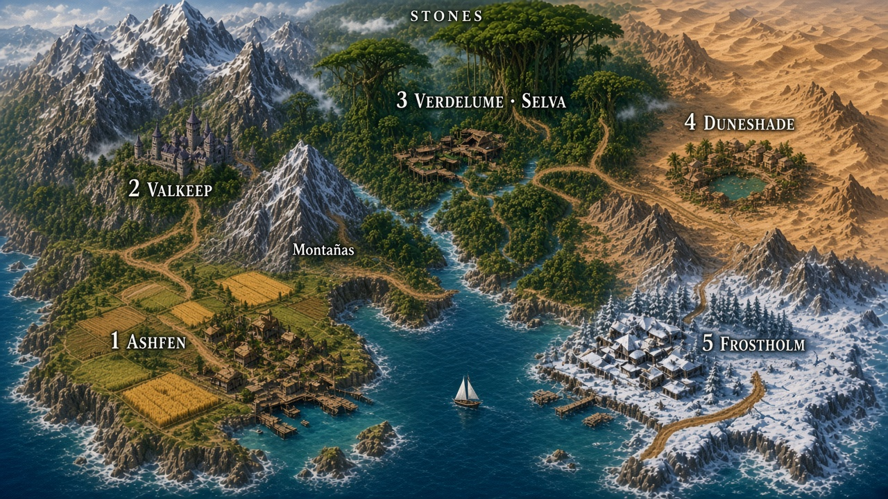

Proyecto base para hacer juegos con IA: la plática actualiza studio/, el código vive en src/, el navegador muestra el resultado.
Mental model: este repo es el juego Stones y su caja de herramientas. El molde portable vive aparte. Leo habla. El agente actualiza studio/ y cambia src/. Leo recarga http://127.0.0.1:5181/. No hay editor.
• Juego — Pasar de mensajero a comerciante clandestino: encargos, carga, riesgo, compradores y mejoras.
• Studio — Que la historia y las decisiones no se queden solo en el chat.
• Arte iterable — Primero proto en código; después PNG finales si hacen falta.
• Editor visual, Unity, Tauri, un MCP studio casero.
• Three.js / 3D, salvo que Leo lo pida por nombre.
• Convertir Stones a Roblox. Si se prueba Roblox, es otro repo.
• RPG de turnos, atrapar bichos, sim de droga real, sprites finales en el primer corte.
Fuente: studio/story.md. Estado: recomendado, falta va
Un caminante entra a una red que mueve piedras de hechizo para calor, agua, conservación y protección. La exploración se siente Pokémon porque cada ruta y pueblo se recorren físicamente; el comercio hace volver por lugares ya conocidos.
Fuente: studio/mechanics.md.
Loop en código: comprar → cruzar pueblo → salir por una puerta → caminar el sendero → llegar al pueblo vecino → vender o seguir atravesándolo.
Interacción de mercado: al acercarse aparecen botones animados E comprar y Q vender con mercancía, precio y motivo de bloqueo. Una operación exitosa anima la piedra entre el puesto y el caminante y muestra el cambio de oro.
Encuentros: retén, asalto y confiscación cortan el camino (flash, velo, NPCs) y esperan E entregar, Q pagar/sobornar o X huir. No hay HP ni turnos. Camino quieto sigue automático.
HUD: oro, piedras (N de M + qué llevás), alerta en 5 estrellas (el calor) y fama. Sin siglas.
| Palanca | Por qué importa |
|---|---|
| Mercado | Stock 5 y pedido 4. Comprar encarece; vender reduce el pago disponible. |
| Calor local | Comprar suma 2; vender suma 6. Viajar enfría las ciudades que dejás descansar. |
| Riesgo de ruta | El sendero tira retén o confiscación según carga visible y calor. Los tres encuentros piden una respuesta; el asalto de monte se fuerza desde el picker hasta que existan veredas. |
El progreso es preparación, no pelea directa: caballo en Valkeep, arquera escolta en Duneshade y fondo falso tardío en Ashfen. El caballo comprado acompaña visiblemente al caminante en las rutas, pero no aparece dentro de las ciudades. El herrero no revela su mejora ni precio antes de reputación 14.
E pierde 1 visible o pasa con fondo falso. Q paga 8+calor y enfría. X vuelve al origen y sube calor.E entrega (caballo/escolta o fondo falso reducen). Q paga el paso. X huye: el asalto calienta poco, la requisa calienta más.• Una ciudad = produce + necesita + calor. Los valores viven en el estado y cambian de verdad.
• Pedidos limitados. Repetir una ruta llena la demanda, baja el precio y aumenta el calor local.
• Un solo oro al inicio. Las piedras son mercancía; la confianza desbloquea contactos. Trueques y monedas regionales pueden llegar después.
• Tres presiones. Guardias/gremio, bandidos/rivales y camino/mercado. El riesgo se anuncia y ofrece respuestas; no es castigo invisible.
Cadena comercial: ámbar de Ashfen → Valkeep → vidrio rúnico a Verdelume → perla de lluvia a Duneshade → piedra solar a Frostholm → cristal de escarcha de regreso a Ashfen.
Fuente: studio/sessions/2026-09-18-mapa-circular.md. Esto no está en el juego todavía.
Camino libre 1→2→3→4→5. Valkeep es el pueblo de montaña. Verdelume es la selva. El atajo de montañas es 1→3 (se salta el 2); cómo se cruza se decide después. El golfo parte 1 y 5.

| Pueblo | Qué es | Produce | Pide |
|---|---|---|---|
| 1 Ashfen | Lugar normal, campos, costa oeste | Ámbar | Escarcha |
| 2 Valkeep | Pueblo de montaña | Vidrio rúnico | Ámbar |
| 3 Verdelume | Selva | Perla de lluvia | Vidrio rúnico |
| 4 Duneshade | Desierto | Piedra solar | Perla de lluvia |
| 5 Frostholm | Hielo, costa este | Cristal de escarcha | Piedra solar |
Fuente: studio/art.md. Este juego es Phaser 4, 2D. Phaser ya usa WebGL. Three.js sería otro motor.
| Qué | Cómo | Sirve para |
|---|---|---|
| Piedras, umbral, orbes | Graphics.generateTexture en src/gfx/ | Proto y a veces ship |
| Tiles, ruido, patrones | Canvas / Graphics | Proto |
| Jugador / NPCs proto | Spritesheet + src/gfx/npcs.js | Proto |
| UI, texto, barras | Text + Graphics | Suficiente |
| Polvo, brillo | Particles | Buena |
| Movimiento de “vida” | Tweens | Buena |
| Personaje ilustrado, fondo pintado, 3D, música | Archivo en public/assets/final/ | Cuando Leo lo cierra |
public/assets/proto/ → 3) final en public/assets/final/ y preload().• Pasada visual 2 — tiles orgánicos 96×96, adoquín irregular, casas y vegetación con más volumen.
• Profundidad — orden por Y para pasar delante o detrás; polvo, hojas, humo y luces cálidas.
• Cinco biomas — templado, arcano, selva, arena y nieve con tiles, tintes y partículas propias.
• Música por lugar — guitarra calmada en Ashfen, bosque tenso en el camino y pueblo místico en Valkeep; fundido al cambiar escena.
• Pasada visual 3 (2026-09-19) — detalle de piso por bioma (matas, flores, lajas, charcos, hojarasca, dunas, grietas, montículos, hielo, huellas); landmark por pueblo (riscos en Valkeep, palmeras y cactus en Duneshade, banco de hielo y nieve en techos en Frostholm, enredaderas en Verdelume, cerca en Ashfen); plaza-mercado con puestos, faroles y pozo vivo; velo de luz por bioma, sombras de nubes y viñeta.
| Pueblo | Piso / calle | Detalle de piso | Landmark |
|---|---|---|---|
| Ashfen | pasto / tierra | matas, flores, manchas | cerca, heno, arena con marea |
| Valkeep | highland / tierra | lajas, grava, matas pálidas | cordón de riscos, peñas, peñascos |
| Verdelume | selva / barro | charcos, hojarasca, raíces, helechos | doble fila de selva, enredaderas en techos |
| Duneshade | arena / tierra | rizos de duna, grietas, matas secas | palmeras, juncos, cactus, huesos |
| Frostholm | nieve / nieve pisada | montículos, hielo, huellas | banco de hielo, témpanos, nieve en techos, árboles secos |
Para otro juego se usa el molde de ~/Development/framework-ia-videojuegos. Este repo conserva las mismas ideas — Vite + Phaser 4, studio/, skills, proto/final — pero se queda dedicado a Stones.
| Carpeta | Rol |
|---|---|
studio/ | Memoria: historia, mecánicas, arte, decisiones, sesiones |
docs/guides/ | Esta guía, para leer en el navegador |
src/gfx/ | Gráficos generados por código |
public/assets/proto/ | Imágenes/audio de prueba |
public/assets/final/ | Assets cerrados |
src/scenes/ | El juego |
Skills: phaser-work (código) y studio-work (actualizar la biblia). Regla always-on: .cursor/rules/ai-game-studio.mdc.
Fuente: studio/sessions/2026-09-19-roblox-analisis.md, studio/sessions/2026-09-19-roblox-prueba-mcp.md. Estado: probado a medias. Stones sigue Phaser.
| Pedido | 2026 |
|---|---|
| Prototipo, obby, shop, tycoon simple | Sí. Roblox ya trae personaje, física, UI, multiplayer. |
| Iterar scripts y playtestear | Sí. Play, consola, screenshot, teclado/mouse. |
| Sistemas complejos | El agente ayuda; vos dirigís. Puede romper el DataModel. |
| Dejarlo solo toda la noche | No. Falsos Pass, 50 turns, se cae el MCP. |
Quién: Roblox lo empuja; creators en Cursor/Claude/Codex; algunos equipos como acelerador. Nadie serio lo usa de piloto automático. Salió Roview (diffs + undo) porque el agente a veces borra de más.
.luau en disco (Script Sync) y usar MCP para el resto: editar por MCP gasta ~4× tokens.| # | Stack | Linux | Usar |
|---|---|---|---|
| 1 | Assistant dentro de Studio | Si Studio abre | Límite diario, contexto chico. No es Cursor. |
| 2 | MCP oficial + Cursor/Claude/Codex | Win/mac oficial; Vinegar + Wine aquí | Camino correcto |
| 3 | Script Sync o Rojo + Git | Rojo sí; Studio no | Junto al 2 |
| 4 | API key Anthropic/OpenAI en Assistant | Igual | Caro. No si ya hay Cursor. |
| 5 | WEPPY (terceros) | Win/mac | Solo si el oficial no alcanza. Pro es de pago. |
| 6 | MCP Rust GitHub | Win/mac | Deprecado. No. |
| 7 | Sober | Sí | Jugar. No desarrollar. |
Vinegar 1.9.4. Wrapper: ~/.local/bin/roblox-studio-mcp. Cursor: ~/.cursor/mcp.json. Reinstalación limpia: LIVE 0.739 y la 0.732 de agosto (forzada, version-ff6341faef444107) cuelgan en el splash. Handshake MCP OK; no hay sesión usable. Dual-boot Windows es el camino estable. Sober = Player, no Studio.
| Ítem | Precio |
|---|---|
| Studio + MCP + Script Sync + mesh gen | $0 (cupos en procedural: 50/24 h) |
| Assistant default en Studio | $0, límite diario |
| Cursor Pro / Claude Pro / ChatGPT Plus | ~$20/mes (el cerebro). Pro+/Max $60–$200 si el agente playtestea todo el día |
| API Anthropic BYOK | Pay-per-token. No lo cubre Claude Pro |
| WEPPY Pro | Suscripción; USD no listado en la comparativa |
Si ya pagás Cursor: cero extra hasta que se acaben tokens. Un solo cliente de IA basta.
studio/ y esta guía. Antes de programar se leen.src/scenes/<nombre>.js y registro en src/main.js si hay que mostrarlo.src/gfx/ o public/assets/proto/. Cerrado en public/assets/final/.studio/decisions.md.studio-work guarda el plan. phaser-work dice cómo tocar el código (qué skill oficial leer, Arcade, recargar). Uno no reemplaza al otro..md son el prompt. El molde para otro juego está en ~/Development/framework-ia-videojuegos y el skill personal empezar-juego.StudioMCP.exe ya está. Detalle: studio/sessions/2026-09-19-roblox-analisis.md.| Item | Detail |
|---|---|
| Juego | http://127.0.0.1:5181/ |
| Guía | docs/guides/stones-studio.html (abrir en el navegador) |
| Historia | studio/story.md |
| Mecánicas | studio/mechanics.md |
| Arte | studio/art.md |
| Sesión de encuentros | studio/sessions/2026-09-18-reten-asalto.md, 2026-09-19-reten-eleccion.md, 2026-09-19-asalto-confiscan.md |
| Encuentros | src/encounters.js + picker en src/events.js |
| Mapa de prueba | studio/maps/stones-mapa-atajo-13.png |
| Mundo / economía | src/world.js + src/state.js |
| NPCs proto | src/gfx/npcs.js |
| Escena pueblo / camino | src/scenes/town.js, src/scenes/road.js |
| Roblox desde Cursor | Pestaña Roblox. Análisis: studio/sessions/2026-09-19-roblox-analisis.md |
Guide vs repository. Update when behavior changes.
src/main.js, src/config.jssrc/art/ (paleta, fuente, personajes, criaturas, terreno, objetos, casas, efectos, interfaz). Revisión en lab.html.src/maps/: los 5 pueblos (Ashfen, Valkeep, Verdelume, Duneshade, Frostholm) y 4 rutas: Ruta 1 (retén, campamento, reja con palanca), Ruta 2 (aduana, cornisa, lobos), Ruta 3 (selva → desierto, escorpiones, oasis), Ruta 4 (Puerta de la Escarcha, lago helado para patinar). Barca Frostholm ↔ Ashfen. Diseño en studio/diseno-mundo.md.src/entities/player.js: golpe, rodada, carrera, agacharse/esconderse, salto, daño, K.O.src/entities/enemies.js: jabalí y lobo que embisten, escorpión enterrado, bandido que roba piedras, guardia con cono de visión, sospecha y revisión.src/state.js (existencias 8, pedido 6, compra +1, venta −2, calor 5 por venta); ventana de mercado en src/scenes/ui.js.[E], diálogos, elecciones, pausa con mapa del mundo, título y guardado.src/entities/escort.js); fondo falso (Ashfen).src/music.js + tonos 8 bits en src/sfx.js.studio/ actualizado: art.md, mechanics.md, decisions.md, diseno-mundo.md, sesiones 2026-09-23-pixel-remake.md y 2026-09-23-mundo-completo.md.
Multi-LLM review log. Each model that reviews this guide appends a new <h3> block below with its name and date.
Append only — never edit prior LLMs' opinions. If you disagree, write it in your own block and reference theirs by name and date.
Verify claims against the code (cite path:line) before opining.
Model Name — YYYY-MM-DD. Cover: Verified, Disagreements, Gaps the guide misses, Recommended priority. Keep it terse — bullets over prose.src/events.js, escenas en src/encounters.js, NPCs en src/gfx/npcs.js, RoadScene.rollEvent ya no es solo flash+texto.package.json. Piedras proto y umbral en src/scenes/play.js + src/gfx/protoStones.js. Studio files y skills existen.src/scenes/boot.js y cambian con fundido mediante src/music.js; el herrero no vende ni muestra progreso.src/world.js y src/scenes/town.js.stones_Game. El molde Phaser y el loop Roblox son dos repos.StudioMCP.exe. No se probó la conexión todavía.StudioMCP.exe en version-ff6341faef444107. Studio/MCP/mesh = $0; Cursor Pro ~$20.RobloxStudio 1.0.0. Reinstal LIVE 0.739 y pin 0.732: ambas cuelgan en splash. list_roblox_studios vacío.